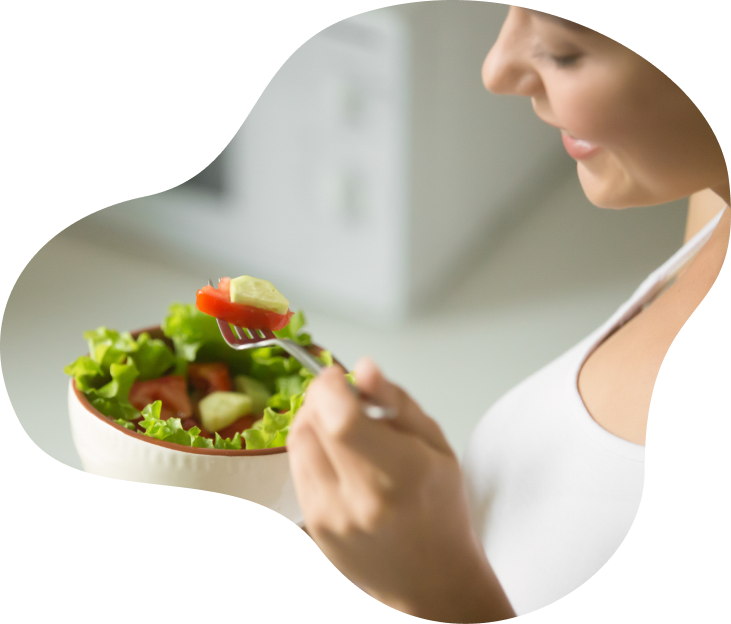

Descubre el camino
¡Agendar mi cita ahora!Planes de asesoramiento
task_alt
Asesoramiento completo
- Cantidades de alimentos según requerimientos y objetivos.
- Plan de menú semanal.
- Recomendaciones nutricionales.
- Recetario saludable.
- Lista de compras.
- Material en PDF.
- Resolución de dudas por WhatsApp.
task_alt
Asesoramiento intermedio
- Consulta presencial.
- Diagnóstico nutricional.
- Entrega de material impreso.
- Recomendaciones nutricionales.
- Cantidades de alimentos estimadas según motivo de la consulta.
task_alt
Asesoramiento básico
- Consulta presencial.
- Diagnóstico nutricional.
- Asesoramiento.
- Cantidades de alimentos según requerimientos y posibles patologías.
- Alimentos no aconsejados según motivo de la consulta.
- Plan de menú con ejemplo de preparaciones para 3 días, y mini recetario en PDF.
¿Interesado en una asesoría personalizada ONLINE?
¡Quiero!